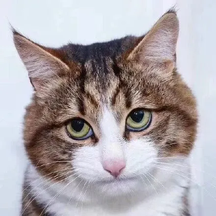
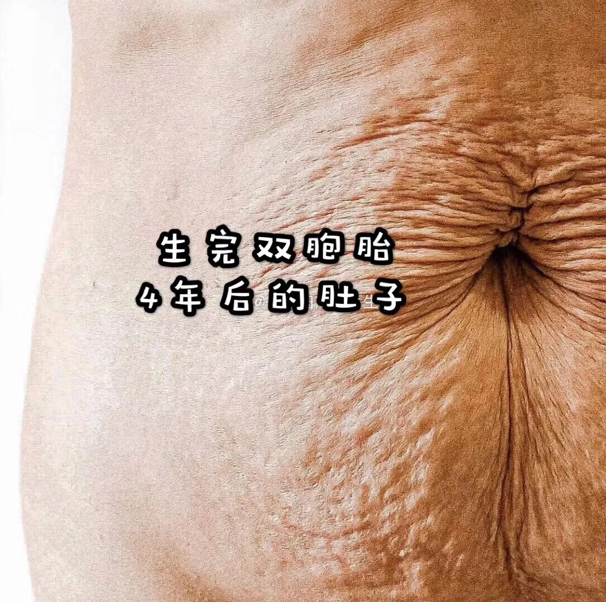
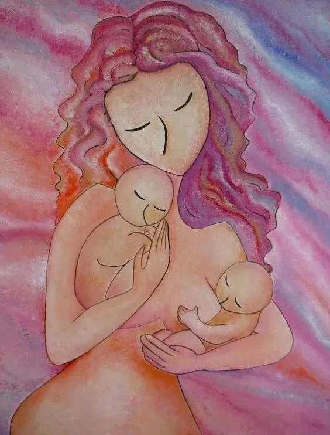

孖仔帮
公众号ID：twinsbang
关注
文|圆圈妈
网图|侵删
【帮主】圆圈妈：先来官宣下，第二期的双胞胎跳蚤市场已开放，公号输入“赶集2”，获取入群链接。
仅限200人入群，拼手气的时候到了哈。第一期的跳蚤市场异常火爆，不到一个小时，跳蚤群就满员了。
感谢集美们给了很多意见，小助手收集反馈后，我都认真看了，为了更简单，快速，高效地处理闲置物，现把跳蚤群分两大类开放：孕产类和宝宝用品。
注：这次满员后不会再手动拉人了，小助手已经对着白炽灯发过毒誓了哈。
另：上期推文《招募测评官|双胞胎哺乳枕，同时喂奶真香！（内有福利）》，发起了双胞胎哺乳枕招募测评官的活动，这里再通知下入选者的名单：
M型哺乳枕▼
@喜乐圆满
@史氾平
@吖頭
U型哺乳枕▼
@melody卉
@yy~猪头
@张豆包
请微信昵称为以上6位的小伙伴们联系小助手（sgguy-com），确认样品收件地址，24小时内未回复的，视为放弃，将测评机会留给其他参与者。
没有入选的小伙伴们别遗憾哈，10月中下旬，这两款双胞胎哺乳枕会开团，届时会把测评结果分享给大家，敬请关注公众号推文。
回归主题
马上要开始8天的国庆长假了，此刻的表情是这样的，如下图所示▼
当妈后，我对假期有了新的认识▼
如果有人帮我照顾双胞胎，假期才能称之为假期，如果所有时间都是我在照顾两只四角吞金兽，那假期只是普通的某年某月某日。
今天这篇的灵感来源于前几天恶补了普希金的打鸡血大作《假如生活欺骗了你》，所以推文标题干脆就这么写了：假如生活捉弄了你，让你生了对双胞胎。
假如生活捉弄了你，让你生了对双胞胎。
不要悲伤，不要心急！
你会发现，可爱的小婴儿是真实存在的，
只要他们不哭不闹，吃了就睡，睡醒了一边玩，饿了就自觉吃，困了不用抱就秒睡。
这样的小婴儿，别说双胞胎，给我来一打吧。
假如生活捉弄了你，让你生了对双胞胎。
不要悲伤，不要心急！
你会发现，身材变形会让你更悲伤，那些号称产后妙瘦身本身就是个病句，
应该在后面加一个“双胎除外”或“仅限单胎”，
因为双胎产后的肚子与瘦身其实还隔着一个光年的距离，
还不包含那柚子皮一样松弛的肌肤▼
有人竟然用秒计算？
pls，are you kidding me?
假如生活捉弄了你，让你生了对双胞胎。
不要悲伤，不要心急！
你会发现，上帝比你更着急，所以提前赋予了所有女性两个乳房，
原因很简单啊，就是怕你不小心生了对双胞胎，方便你可以同时亲喂...
额，那三胞胎，四胞胎呢？
----别担心，不是还有奶爸吗？
假如生活捉弄了你，让你生了对双胞胎。
不要悲伤，不要心急！
你会发现，与其心急不如多来点仙气，
人其实真的可以凭着一口仙气吊着就能活下来，前提是边上有两个亲生的小婴儿；
你不仅能活下来，还能不眠不休，坚持天天给这两只小婴儿铲屎倒尿接屁…
而你竟然...摸着良心，其乐融融！
假如生活捉弄了你，让你生了对双胞胎。
不要悲伤，不要心急！
你会发现，让你不再悲伤不再心急的救命恩人就是天底下最可爱的人，
此人正是能帮你带双胞胎的月嫂，保姆。
虽然用钱买来的可爱不是特别香，但她们能帮你争取到一炷香的时间，
好好洗个热水澡，吃顿热饭，上大号不用分批次，运气好还能就地打个盹…
双胞胎有人带，天都光嗮！
这种感恩戴德的感觉就好像，有人发现你在撒哈拉沙漠弹尽绝粮3天3夜后，递给你满满一碗水。
假如生活捉弄了你，让你生了对双胞胎。
不要悲伤，不要心急！
你会发现，悲伤之余让你想通了很多事情，比如小时候老师经常问的问题“你最崇拜的人是谁？”
终于有答案了，毫无疑问，那就是自己的父母。养儿方知父母恩，养两儿方知为人父母苦苦苦。
尤其佩服当年的妈妈们，肚里一个崽，左右手两个娃，还能下农田插秧收割赶牛车，
只是新的问题来了：为何自己才养两个娃却每天都累成狗，喘口气的机会都没有。
假如生活捉弄了你，让你生了对双胞胎。
不要悲伤，不要心急！
你会发现，真正该心急的是手机里经常告急的内存，
手机里99%都是俩娃的照片和视频，光是他们1岁内的照片就已经塞满了1T的移动硬盘；
有意思的是，大多数都是俩娃的合照，
因为就凭你那令人捉急的眼盲症，仅看单人照，时间久了，根本无法辨认出那个时候的娃到底对应的是这个时候的哪个娃？
假如生活捉弄了你，让你生了对双胞胎。
不要悲伤，不要心急！
你会发现，所有悲伤和心急都不过如此，世间所有的恐惧都敌不过一个瞬间，那就是---有两个人类幼崽同时醒了，
同理，世间最幸福的一瞬间莫过于这两个幼崽都睡了，
如果理解不了这句话，那下面这个小片段会帮你快速脑补，看完马上秒懂。
假如生活捉弄了你，让你生了对双胞胎。
不要悲伤，不要心急！
你会发现，你的记忆力大不如以前，但依然清晰记得俩娃成长中的第一次。
第一次两人同时冲你笑，萌哒哒的样子让你庆幸当初没有把这两只扔掉。
第一次翻身，第一次坐起来，第一次爬行，第一次笑出声，第一次同时睡着…
第一次两个小人儿颤巍巍地走到你面前，你不知道该接住哪个，
第一次在尿布台上突然喊妈妈，你激动到掩面而泣，
还有史上最动听的声音---奶声奶气的告白：“妈妈，我爱你。”
假如生活捉弄了你，让你生了对双胞胎。
不要悲伤，不要心急！
你会发现，比悲伤和心急更恐怖的是，小孩的善变。
他们就好像Windows系统一样，经常不经过你的同意，三更半夜就自行更新升级了，
一觉醒来，平时秋风扫落叶般喝奶的哥哥厌奶了，对母乳抵死不从的弟弟终于缴械投降，亲喂瓶喂都来者不拒了；
那个翻身只会翻一半的妹妹，突然间就超过姐姐，一骨碌就坐起来了，而姐姐还在翻身路上无法自拔；
经常被咬的弟弟终于开始反抗了，反手就把准备咬人的哥哥一顿揍；
你会不自觉惊叹，小孩的善变速度简直了，让上帝都忍不住摇头苦笑，就好像家里那5G网络一样，前一秒是龟速，下一秒就是超音速。
假如生活捉弄了你，让你生了对双胞胎。
不要悲伤，不要心急！
俩娃一天天长大，还用一脸小迷妹小迷弟的眼神崇拜地看着你，
你会发现，这种成就感可以这样形容▼
没有当父母之前，自己是块叉烧，
当了父母之后，就是叉烧馅的月光饼，突然间价值连城了！
既然如此，那就坦然接受生活的安排吧，被一辈子捉弄着又何妨？
我愿意被生活捉弄一辈子。
只要孩子们平安健康，快乐成长。
如果可以，也请生活开个绿色通道，让这8天假期鸡飞狗跳可以有，不要堵在路上，困在车里，与两只吞金兽一起互相折磨，叫天天不应叫地地不灵。
谨以此文献给家有双胞胎，准备迎接国庆假期的宝爸宝妈们。
如果你尚在孕中，正在产检路上忐忑奔波，如果你在育儿模式中，水深火热里无法自拔，无论俩娃多难搞，希望看完此文都能让您下一秒涌出的泪水，化作甜甜的笑意。
假如生活没有捉弄你，真的让你生了对双胞胎，不要悲伤，不要心急！
你还发现了什么，快点来留言区分享哦！
预祝孖仔帮的大朋友小朋友中秋节国庆节快乐！
-END-
今日互动话题
#家有双胞胎那些趣事，你还发现了什么#
评论区聊一聊呗！
微信公众号：孖仔帮
ID : twinsbang
专注双胞胎孕育，养育，教育经验分享
扫码关注我们
点一下你会更好看耶



